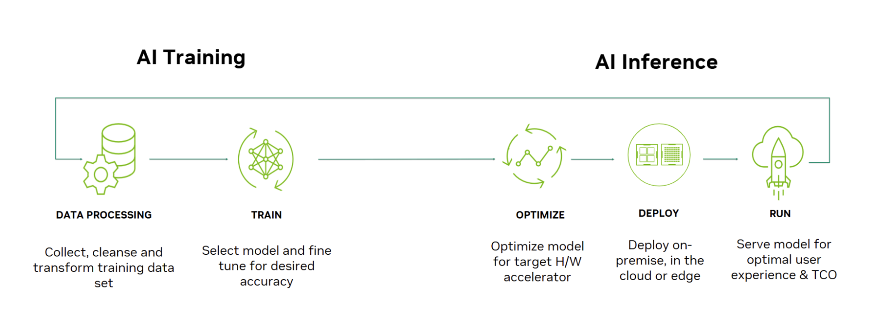
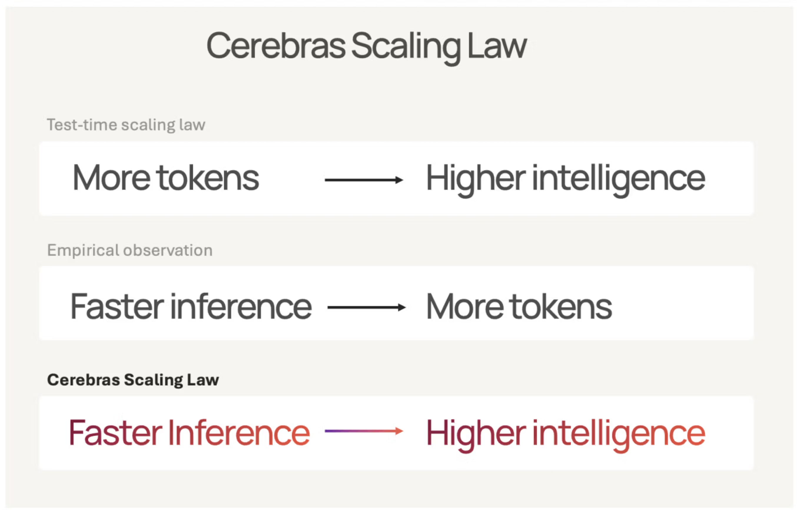
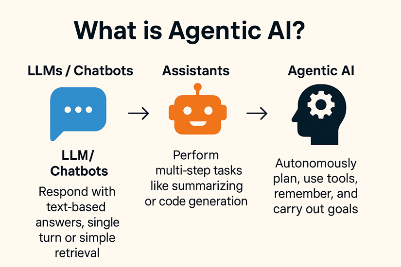

Why Fast AI Matters
If ChatGPT already writes faster than you can read, why does AI need to be any faster?
A few months ago, while I was in the middle of my internship at Cerebras Systems, my dad asked me what my company did. I responded, “They manufacture hardware chips that make AI models like ChatGPT run faster.” He said, “Why does that matter? I already can’t read as fast as ChatGPT generates text.” His response made me realize that most people don’t understand the importance of speed in AI. If models already respond faster than you can read, what is there left to improve?
Most users of ChatGPT probably don’t think speed is one of AI’s biggest problems. You enter a question, wait a few seconds, and then watch a response appear faster than you can read it. Making the words appear twice as fast doesn’t seem too useful.
But that is only one very small dimension of the matter:
- The speed of an AI model affects how many people can use it at once: You think serving ChatGPT to millions of users across the world, with little to no delay per prompt, is an easy task?
- Surprisingly, research has shown that the output quality of language models (like ChatGPT, Claude, Gemini, etc.) dramatically improves with more “thinking” tokens generated, implying that within a time window: More speed ⇒ more tokens ⇒ more intelligent responses.
- The use of AI models in many fields, whether it’s language generation, voice applications, autonomous driving, and robotics, can be completely revolutionary or useless depending on the speed it operates at.
- Modern “agentic” tasks require faster individual AI model calls, to reduce the delay accumulated from numerous model calls over a long period of time.
What Happens When You Ask ChatGPT a Question?
AI models have two main stages: training and inference.
Training is the process of teaching a model to output high quality responses based on large amounts of data. This stage is a lot more glamorous, as you often hear companies talking about training a super large model, across thousands of GPUs in data centers, using the entire internet as a dataset.
Inference is the process of using the trained model [1]. When you type a question into ChatGPT and receive an answer, that is inference. When an AI voice assistant listens to you and responds, that is inference. When the Tesla autopilot cameras on the car observe its surroundings to decide how to steer the car, that is inference.
For a company like ChatGPT that serves millions of users, inference does not happen once. It happens over and over again, at every time in the day, everyday, whenever someone sends in a prompt.

That distinction is important because making AI faster is not just about making one response type onto your screen more quickly. It is about making this entire process more efficient.
1. Faster AI Can Serve More People With the Same Hardware
Obviously, if you can make a single request to the model to finish twice as fast, then you can complete twice as many requests in the same amount of time. But making every individual request twice as fast is not always possible. Two important measurements of AI speed are latency and throughput:
- Latency is how long it takes to complete one request.
- Throughput is how much total work a system can complete over a period of time.
Imagine a coffee shop with five baristas and a near endless line of customers. Each barista normally works on one order at a time.
The easiest way to serve twice as many customers would be to make every barista complete each order twice as fast, but that is not always possible. For example, if a coffee needs thirty seconds to brew, the barista cannot just decide to make it brew in fifteen.
Another option is to hire five more baristas. With ten instead of five, the shop can serve more customers even if each individual order takes the same amount of time. But this requires twice as many workers and therefore more resources.
A better option is for the baristas to work more efficiently. Instead of waiting for one coffee to finish brewing before starting another order, a barista could begin preparing a second drink while the first one is still brewing. Now while each individual customer may wait about the same amount of time, each barista can complete more total orders in a day. The shop has increased its throughput without hiring more people.
AI companies face the same problem. One way to serve more users is to simply buy more GPUs, just like hiring more baristas. But GPUs are expensive, and adding more of them requires more hardware and infrastructure. It makes more sense to first figure out how to use existing GPUs as effectively as possible.
Researchers behind an AI serving system called vLLM demonstrated how important this can be. By improving how temporary model memory is managed during generation, vLLM was able to process around two to four times more requests than competing systems while maintaining a similar delay for individual users [3].
Individual users may not notice their responses arriving any faster, but the same hardware can serve far more users at once.
So faster AI is not always about making the words on your screen appear faster. It also means allowing the same hardware to serve more users at once, making the overall system faster.
2. Faster AI Can Spend More Time “Thinking” Without Making You Wait Longer
When you solve a difficult math problem, you probably do not just look at it and immediately know the answer. You’ll probably reason about the problem in your head, think through different solutions, and write down intermediate steps before reaching a conclusion.
Interestingly, language models can benefit from doing something similar.
You may have noticed that when you give a model a prompt, it sometimes says it is “thinking” before outputting a response. What is happening during that delay? The model is generating intermediate “thinking” tokens as it reasons through the problem before producing the response you actually see.
Researchers have found that allowing a language model to generate more of these thinking tokens, similar to an internal monologue or thinking out loud, can dramatically improve its performance on difficult reasoning problems. In a 2025 ICLR paper, researchers found that letting models generate more thinking tokens significantly improved the quality of their responses. In some experiments, a smaller model generating more thinking tokens even outperformed a model fourteen times larger [2].
So what does this have to do with speed?
In physics, one form of energy can be converted into another. Solar panels convert sunlight into electricity. If we improve the efficiency of solar panels, then the same amount of sunlight can produce more electricity.
AI inference has a similar relationship. Thinking tokens can lead to higher quality responses. If we improve inference speed, then a model can generate more thinking tokens in the same amount of time, potentially producing a higher quality response without making the user wait longer.
So faster AI doesn’t just mean each user receives the same response sooner. Rather, it means that given the same time window, each user receives a response of higher quality.

3. Some AI Applications Actually Need to Be Fast
A text chat is a forgiving way to interact with AI. The world doesn’t end if ChatGPT takes two seconds instead of one second before responding. However, speed may be much more critical in other mediums of interacting with AI.
Consider a spoken conversation. It’s very unnatural to talk to someone who waits a few seconds before responding to every sentence, even if their response is excellent. Google highlighted this problem when introducing Gemini 3.1 Flash Live, a model designed for real-time voice and visual interactions. The company specifically emphasizes low latency as an important part of making conversations with AI feel natural [5].
Voice is one example of a broader category of speed-critical AI applications, where being too slow can make the system much less useful, or even unusable.
Think about autonomous driving. A self-driving car operates in an environment that changes extremely quickly. Other cars move, pedestrians cross the street, traffic lights change, and unexpected obstacles appear. Milliseconds of response time literally separates an autonomous driving system from being safer than human drivers, and being life threatening to the passenger and other drivers/pedestrians on the road.
Robotics has the same problem. A robot interacting with the physical world needs to continuously respond to changes around it. If every decision comes with a long delay, even an intelligent robot can become impractical.
This is what makes speed so important in these applications. For a text chatbot, faster inference might simply mean less waiting. But for voice assistants, autonomous vehicles, robotics, and other real-time systems, speed can determine whether the application is at all relevant.
In speed-critical AI, inference speed is not just a convenience. It can be the difference between a useful system, and one that is useless or even potentially dangerous.
4. AI Agents Turn Minor Latency Into Major Delays
A normal chatbot interaction is relatively simple:
Question → AI model → Answer
An AI agent can work differently. Instead of a single model call, an AI agent makes multiple calls to other AI models to handle subtasks, such as interacting with tools, examining the results, and deciding what to do next [4].
Imagine asking an AI agent to research several hotels and organize a trip. It might:
- Understand your request.
- Search for hotels.
- Read the results.
- Compare options.
- Search flight information.
- Reconsider the plan.
- Build an itinerary.
- Produce its final answer.

Many of these steps can require another interaction with an AI model. Anthropic describes these kinds of systems as workflows and agents, and notes that while more complicated workflows may improve performance, they also increase latency and cost [4].
This creates a problem: A two second delay for a single model call is not very noticeable. But a two second delay repeated twenty times becomes forty seconds, which would probably make the user extremely frustrated.
This is one reason inference speed may become even more important as AI changes. Today, many people use AI by asking one question and receiving one response. Future agentic systems may spend minutes, hours, or even days completing large complicated tasks.
As every individual model interaction becomes faster, the improvement can accumulate across the entire run time. Shaving half a second off a single ChatGPT response is not important. But shaving half a second off fifty different model calls is much more noticeable.
A Quick Catalogue: Where Does AI Speed Actually Matter?
Here is a simple way to think about it.
1. Large AI Services
Why speed matters: More users can share the same computing hardware.
Systems such as vLLM show that improving how inference is implemented can greatly increase throughput without requiring the same increase in hardware [3].
2. Chatbots
Why speed matters: Less waiting time for difficult questions.
For simple questions, generation speed isn’t that important, as the model doesn’t have much output anyways. The benefit becomes noticeable when tackling complicated problems, where outputting intermediate “thinking” tokens becomes necessary for a high quality response.
3. Speed-Critical Applications
Why speed matters: These applications become less useful, useless, or even dangerous if inference isn’t fast enough.
Pauses during speech for voice applications, processing delays in autonomous vehicles, and response latency in robotics, dramatically impacts the effectiveness of these applications [5].
4. AI Agents
Why speed matters: One task may require many separate model calls.
Minor latency in individual model calls can accumulate into major delays when agentic workflows make numerous model calls and operate over a long period of time [4].
So, Why Does Fast AI Matter?
When I first joined Cerebras Systems, I thought about performance mostly as a technical problem.
How many tokens can a system generate every second? How efficiently can hardware be used? How quickly can a model respond?
But those numbers only become interesting when they unlock the ability for AI to complete previously infeasible tasks.
- Faster inference can let the same hardware serve more users.
- It can significantly improve the response quality of language models.
- It can enable many AI use cases, like voice applications, autonomous driving, and robotics.
- It can prevent minor latencies from accumulating into major delays across complicated AI agent workflows.
That is why judging the importance of speed in AI inference based only on ChatGPT being able to type faster than you can read misses the bigger picture.
The goal is not simply to make words appear faster on your screen. The goal is to make each second of computing power accomplish more.
About Me
I’m Andrew Deng, a 2nd year CS student at the University of Waterloo. I’m a second generation immigrant (my parents were originally from Chengdu, Sichuan, China), and I have a younger brother. Nevertheless, I was surrounded by the Chinese culture and community since I was a child, having grown up in Markham, Ontario, Canada.
I enjoy playing competitive online video games, such as League of Legends and Team Fight Tactics. I also try to go to the gym regularly, though I am pretty inconsistent, and even more inconsistent with my diet. But most of all, I enjoy hanging out with my friends.
I also have a dog named Bobby (I named him), who is a five year old Cockapoo, whom I absolutely adore.
A bit more about me:
- I previously worked as a Research Engineer Intern at Cerebras Systems and a Software Engineering Intern at Storytellers.ai.
- I first authored this machine learning research paper.
- I, interestingly, spent my first three study terms in three different programs: I transferred from Computer Engineering to Software Engineering to Computer Science.
- I’ve won a few hackathons.
- I have a black belt in Karate.
Want to Learn More?
The next time you use an AI model, pay attention to where you are actually waiting.
Is the model generating text? Is it thinking before answering? Is it using several tools? Would the interaction still work if every step took five seconds longer?
If you want a simple introduction to what happens when an AI model is used, start with Google Cloud’s explanation of AI inference in reference [1].
If you want to see a concrete example of how engineers can make AI systems serve dramatically more requests without simply buying more hardware, read the vLLM paper in reference [3].
And if you want to see why speed may matter even more as agentic workflows complete complicated tasks, read Anthropic’s Building Effective Agents in reference [4].
References
- Google Cloud, “What is AI inference?” [Online]. Available: https://cloud.google.com/discover/what-is-ai-inference. [Accessed: Aug. 14, 2026].
- C. Snell, J. Lee, K. Xu, and A. Kumar, “Scaling LLM test-time compute optimally can be more effective than scaling parameters for reasoning,” in Proc. Int. Conf. Learn. Representations (ICLR), 2025. [Online]. Available: https://proceedings.iclr.cc/paper_files/paper/2025/hash/1b623663fd9b874366f3ce019fdfdd44-Abstract-Conference.html.
- W. Kwon, Z. Li, S. Zhuang, Y. Sheng, L. Zheng, C. H. Yu, J. E. Gonzalez, H. Zhang, and I. Stoica, “Efficient memory management for large language model serving with PagedAttention,” in Proc. 29th Symp. Operating Systems Principles (SOSP ’23), 2023, pp. 611–626, doi: 10.1145/3600006.3613165.
- E. Schluntz and B. Zhang, “Building effective agents,” Anthropic, Dec. 19, 2024. [Online]. Available: https://www.anthropic.com/engineering/building-effective-agents. [Accessed: Aug. 14, 2026].
- A. Fortin and T. Schaeff, “Build real-time conversational agents with Gemini 3.1 Flash Live,” Google, Mar. 26, 2026. [Online]. Available: https://blog.google/innovation-and-ai/technology/developers-tools/build-with-gemini-3-1-flash-live/. [Accessed: Aug. 14, 2026].
- S. Lie and J. Wang, “The Cerebras Scaling Law: Faster Inference Is Smarter AI,” Cerebras Systems, Jun. 11, 2025. [Online]. Available: https://www.cerebras.ai/blog/the-cerebras-scaling-law-faster-inference-is-smarter-ai. [Accessed: Aug. 14, 2026].
- K. Aubrey, “What’s the difference between deep learning training and inference?” NVIDIA, Jul. 29, 2016 (updated Oct. 2025). [Online]. Available: https://blogs.nvidia.com/blog/difference-deep-learning-training-inference-ai/. [Accessed: Aug. 14, 2026].
- Zubair, “Latency vs throughput,” GoPenAI, May 20, 2024. [Online]. Available: https://blog.gopenai.com/latency-vs-throughput-e68949d77220. [Accessed: Aug. 14, 2026].
- Sagentics, “Chatbot vs agentic assistant: what’s the actual difference,” Sagentics, Aug. 1, 2026. [Online]. Available: https://sagentics.ai/blog/chatbot-vs-agentic-assistant. [Accessed: Aug. 14, 2026].
Visual Credits
- Figure 1. AI Training vs. AI Inference. Reproduced from NVIDIA, in Aubrey [7]. Supporting explanation adapted from Google Cloud [1].
- Figure 2. Throughput vs. Latency. Reproduced from ApprovedModems.org, as published in Zubair [8]. Applied to AI serving using evidence from Kwon et al. [3].
- Figure 3. The Cerebras Scaling Law. Reproduced from Lie and Wang [6]. Supporting evidence adapted from Snell et al. [2].
- Figure 4. What Is Agentic AI? (Chatbot vs. Agent). Reproduced from Sagentics [9], which credits Goseeko as the original source. Agent workflow concept adapted from Schluntz and Zhang [4].
- Photograph of Bobby. Author’s own photograph, 2026.
Myths vs. Facts
For fun, here is a myths vs. facts section on common myths I’ve heard about serving AI models, covering topics not discussed in the blog.
- Myth: Every AI request uses an entire GPU by itself. Fact: AI hardware works on requests from multiple users at the same time. Serving systems try to organize these requests efficiently so that hardware is not sitting partially unused. This is one reason improving throughput can let the same hardware serve many more users.
- Myth: Running the same AI model on different hardware changes how intelligent it is. Fact: Faster hardware does not make the model worse. A model served on Cerebras hardware, GPUs, or other compatible hardware still uses the same learned parameters and produces the same outputs. The difference is how quickly and efficiently the underlying calculations are performed.
- Myth: Once an AI model is trained, most of the expensive work is over. Fact: Training is usually a huge one time cost, but inference happens every single time someone uses the model. For models that serve millions of requests over months or years, the total cost of running the model can eventually exceed the original cost of training it. This makes inference efficiency important throughout the model’s entire lifetime.
- Myth: Speed only matters for inference. Fact: While this blog focuses on inference, speed is also extremely important during training. Modern AI models are trained on enormous datasets and can contain billions of parameters, so training them without major hardware and software optimizations would take far too long. Faster training also means doing more experiments, using more data, and reaching a finished model sooner.
- Myth: You need an expensive GPU to run AI models yourself. Fact: Not necessarily. Smaller or optimized AI models can run directly on laptops, phones, CPUs, integrated graphics, and other consumer hardware. A powerful GPU mainly allows you to run larger models or generate responses faster.